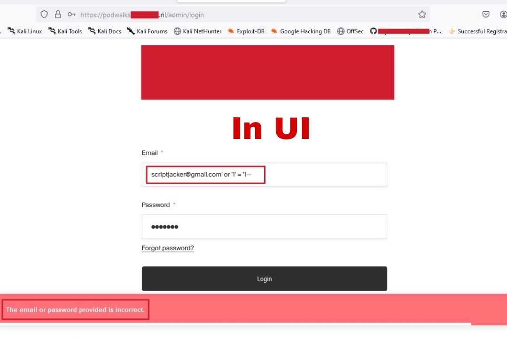
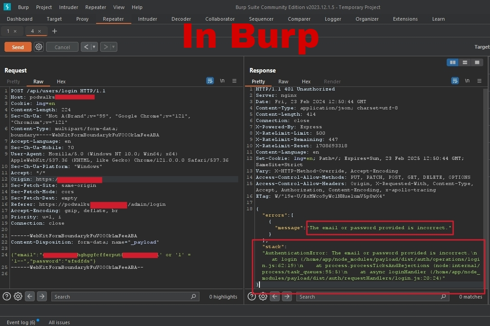
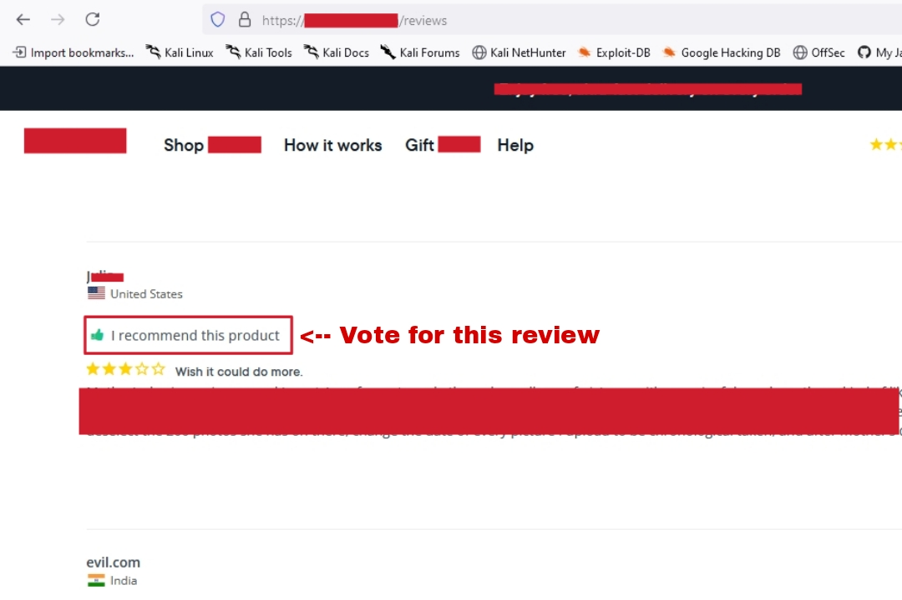
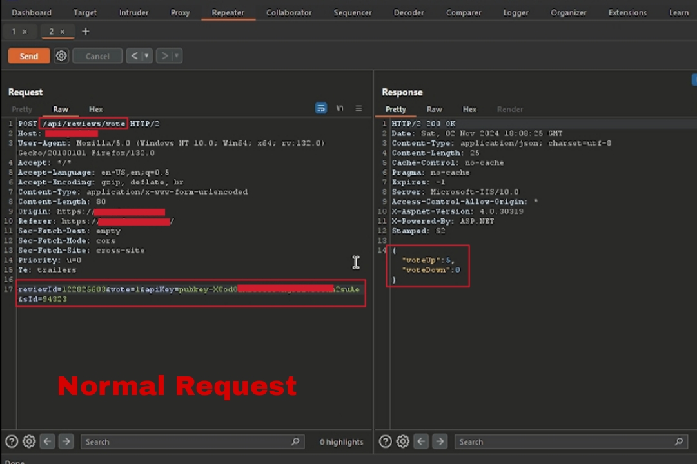
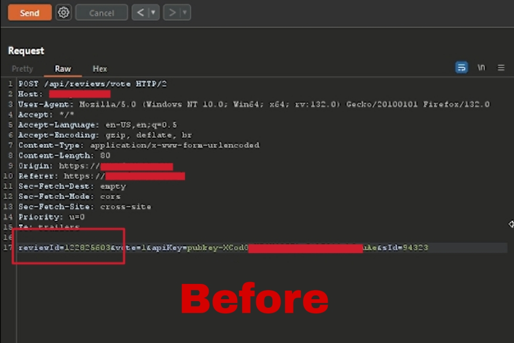
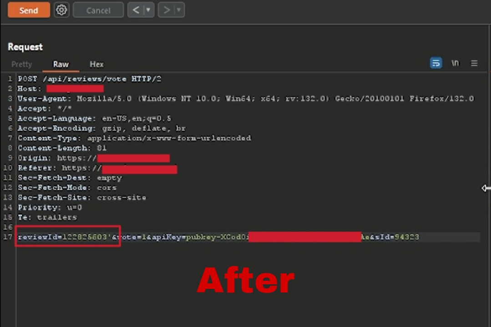
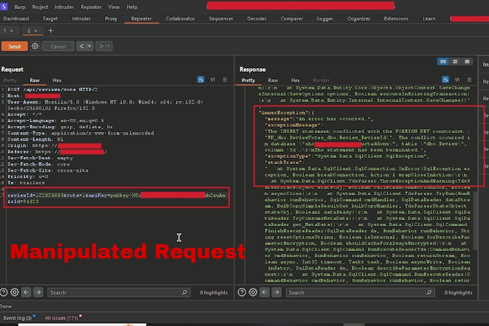
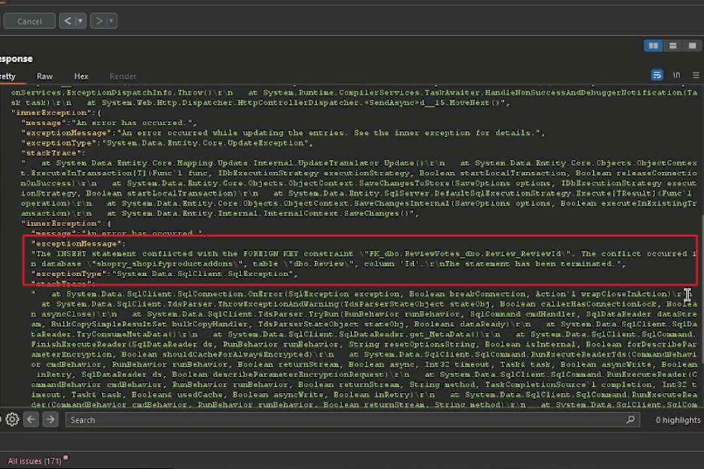

Request Manipulation
- Step 1 Open login page and enter ' or '1' = '1-- in email field.
- Step 1 Capture the request in BurpSuite and enter ' or '1' = '1-- in email field.
- Step 1 I clicked on the like button and captured the request in Burp Suite. The POST request to /api/reviews/vote had several parameters in the body, including reviewId=122825603&vote=1&apiKey=pubkey-XCodOia&sId=94323
- Step 2 At first glance, everything seemed normal. But then, I thought, “What if I could manipulate the reviewId?” So, I added a single quote (') to the reviewId parameter, changing it to reviewId=122825603', and sent the request again.
- Step 3 To my surprise, the server responded with a lots of errors, revealing sensitive information about the database, tables, columns, stack trace which could leads to SQli. As I said earlier that in many cases information disclosure is the first step and it servers at gateway towards other vulnerabilities.
- Hey Hackers ,
- My name is Parth Narula,
and I'm excited to share this amazing article on Bug Hunting with Request Manipulation.
We're all familiar with intercepting request and response in BurpSuite, where attackers can do lot of stuff including capturing request and response and manipulating them. In Today's article you guys will definitely learn something new because in between I am gonna tell mind blowing things about the importance of intercepting & manipulating each and every request.
- I hope you find this information valuable!
1. Request Manipulation
- Okay, so let’s start with the basics. A request is what your browser sends to a server every time you click, type,
or scroll around on the internet. You make a request, and the server sends back a response—simple, right? Well, not quite.
- Request manipulation is like changing the question you’re asking a server to see if it responds differently. You intercept a
request, make a few changes—maybe asking for a bit more information or in a way the server isn’t expecting. Tools like Burp
Suite let you catch and modify these requests in ways that aren’t possible in a regular browser. This is where things start to
get interesting.
2. Request Manipulation leads Information Disclosure
- Request manipulation can lead to a wide range of vulnerabilities beyond just information disclosure,
including XSS, ATO, SQLi, business logic flaws, and unauthorized access. However, in many cases, information Disclosure
is the first vulnerability exposed, serving as a gateway to other bugs.
In this article, we will specifically focus on information disclosure vulnerabilities that I discovered. In future posts, we'll explore other types of vulnerabilities uncovered through request manipulation. If you also find these kind of bugs so let me know. I will add your report here with your name as credit.
i.) Case Study: Browser UI vs BurpSuite
- So, In this report we will get to know the difference between response of UI and BurpSuite.
- I was working with a login page https://podwalks.redacted.nl/admin/login and wanted to see if changing the information I entered in the input fields (email & password) would reveal
anything unexpected. So, I started by testing right in the browser UI, entering different payloads like: (')single quote or '1'='2'-- etc into the email field to
see if they might trigger an unusual response.
- Browser UI I entered various payloads directly into the input fields, trying to see if I could get any hidden information back in the response.
But each time, the page responded normally without revealing anything sensitive. No luck here.

In the UI response, you will see a generic error message stating, 'The email or password
provided is incorrect.' No sensitive information, additional details, or stack trace is displayed in the response.
- BurpSuite Then, I tried using Burp Suite to capture and modify the same
request before sending it to the server. This time, the response was different—sensitive information was exposed that hadn’t
shown up through the regular UI testing.

In the response, you will see an error message that includes a stack trace, revealing
additional details about the system's internal structure. This exposure provides insights beyond the standard 'incorrect
email or password' message, potentially disclosing sensitive information useful for further analysis like for SQLi.
stack": "AuthenticationError: The email or password provided is incorrect.
at login (/home/app/node_modules/payload/dist/auth/operations/login.js:62:19)
at process.processTicksAndRejections (node:internal/process/task_queues:95:5)
at async loginHandler (/home/app/node_modules/payload/dist/auth/requestHandlers/login.js:20:24)"
- Lesson Learned This showed me the power of using specialized tools
like Burp Suite. While the browser UI is limited to what’s shown on the page, Burp lets us dive deeper, adjusting details that
the server notices but the browser doesn’t usually display. For security testing, this can make a huge difference in uncovering
hidden information.
ii.) Case Study: POST Request Parameters
- So, In this report we will get to know the importance of capturing each and every request specifically POST, PUT request because
the parameters aren't shown in URL if it does not support GET method.
- As I navigated through the reviews page of a web application, I noticed a button allowing users to vote or like an already
posted review. Curious about the underlying mechanics, I decided to investigate further.
- Steps To Reproduce:






"message":"An error has occurred.",
"exceptionMessage":"The INSERT statement conflicted with the FOREIGN KEY constraint \"FK_dbo.ReviewVotes_dbo.Review_ReviewId\".
The conflict occurred in database \"shopry_shopifyproductaddons\", table \"dbo.Review\", column 'Id'.\r\nThe statement has been terminated.",
"exceptionType":"System.Data.SqlClient.SqlException",
"stackTrace":" at System.Data.SqlClient.SqlConnection.OnError(SqlException exception, Boolean breakConnection)"
- Lesson Learned This experience showed me the importance of
capturing every request because not all parameters are visible in the URL. Many important details are often hidden in POST
requests. So, we should always check all requests, even the ones that seem normal, to find potential security issues.
3. Tips and Techniques
- Art of Observation: Always look for unusual parameters, unexpected data, or error messages that might reveal backend details.
- Explore Beyond the UI: UI-based testing is just the tip of the iceberg. Tools like Burp Suite offer access to raw requests and responses, showing details that you simply can’t see in the browser.
- Error Handling: Systems often disclose extra info when they’re stressed or confused. Purposely triggering errors (without causing harm) can sometimes lead to info leaks.
- Stay Curious: Approach every request with curiosity. Is there something odd here? Could there be more parameters if I just look a little closer?
4. Mitigation
- If you’re on the defensive side, you’ll want to lock these doors:
- Limit Error Detail: Ensure that error messages are clear to the user but don't expose backend information.
- Sanitize Inputs: Never trust user input. Validate and sanitize everything, especially on the server side.
- Access Control: Make sure data is only accessible to those who genuinely need it. Role-based access control (RBAC) can limit unnecessary data exposure.
- Regular Testing: Periodic security assessments are essential to catch any weak points before attackers do.
5. Conclusion
- So, next time you’re in Burp Suite, intercept a request, tweak a parameter, and see what you uncover. The secrets are out there—you just need to know where to look.
- So mates, I hope you had learnt something new after reading this article. You can share your views in my Contact Page and If you guys also want to become a author of a article so also you can email me or fill contact form and I will post your article here with your name, Only if the topic is interesting :)